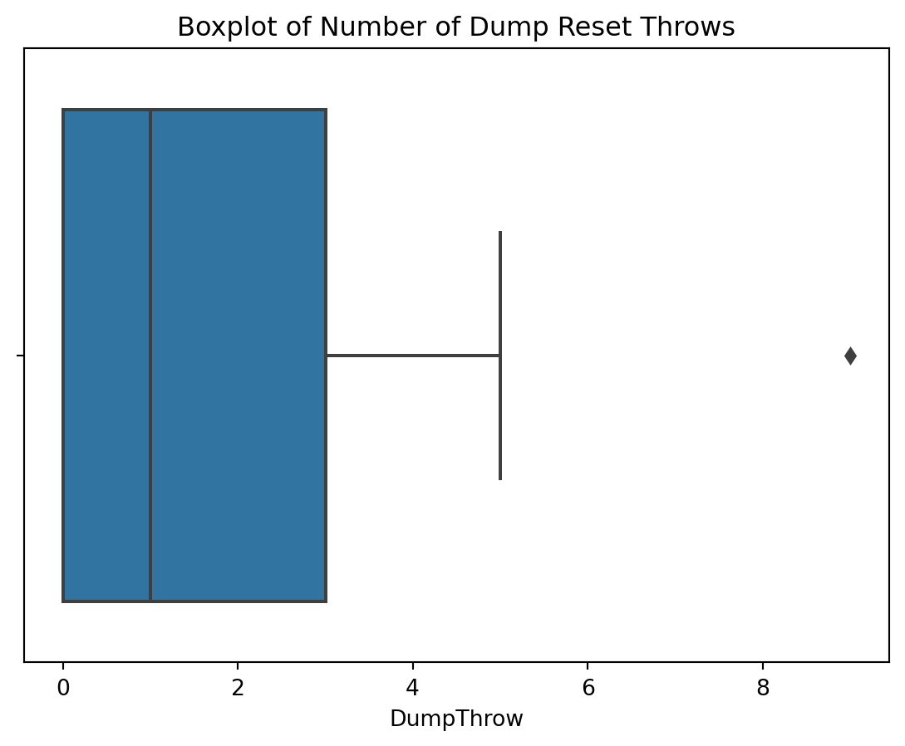

This is the fifth and final blog post in a series of posts for my class on machine learning at Virginia Tech. Here we will discuss outlier detection.
The Data
We’ve already introduced the dataset we’ll be using for this blog series in the previous blogs. In case you didn’t read them, however, here’s a quick summary.
The data was collected by Burn, the VT Men’s Ultimate Club. Ultimate, also known simply as frisbee, is a game that involves players trying to throw a disc between themselves with the goal of being in their team’s endzone with the disc, scoring them a point. Don’t worry too much about the intricacies of ultimate; the machine learning concepts should still make sense regardless.
I mentioned in my first blog that we’ll be using spinoffs of the initial dataset, which contained rows of throws from Burn’s offense at a recent tournament. That’s going to be the case in this blog. Burn has gone through the trouble of summarizing the data for each player on their team. We’ll be using this dataset for our clustering purposes.
Code
```{python}import numpy as npimport pandas as pddat = pd.read_csv("playDatSteelCity23.csv")dat = dat.drop(['Unnamed: 0'], axis=1)dat.head()```
Player
ActivePoss
ActivePossScored
ScorePerc
Touches
PickUp
CenterThrow
DumpThrow
SwingThrow
UpLineThrow
...
RecEPA
HanEPARes
HanEPA2
HanEPATurn
RecEPATurn
EPA
TourneyScore
TourneyGrade
EPAPerPoss
EPAPerTouch
0
AR
20
7
35.0
54
6
0
0
9
2
...
0.398
0.718
1.108
-0.420
0.000
1.248
1.00
A
0.062377
0.023103
1
AK
10
5
50.0
25
0
0
0
2
0
...
0.200
0.300
0.307
0.000
0.000
0.248
0.33
B
0.024833
0.009933
2
JL
41
15
36.6
115
2
0
3
21
6
...
1.843
0.956
-0.073
-2.074
-0.416
1.512
0.95
B
0.036869
0.013145
3
ZA
16
7
43.8
40
4
1
1
5
3
...
-0.101
0.415
0.589
-0.829
-0.209
0.230
0.59
B
0.014361
0.005744
4
CM
29
10
34.5
119
19
2
5
12
5
...
0.229
0.637
0.612
-1.915
0.000
0.583
0.16
C
0.020089
0.004896
5 rows × 92 columns
Outlier Detection
Outlier analysis and anomaly detection are techniques used in data analysis to identify and understand unusual or abnormal observations in a dataset. These techniques help in detecting data points that deviate significantly from the expected patterns and behaviors.
Outliers are data points that significantly different from the majority of the data. They can be caused by various factors such as measurement errors, data corruption, or rare events.
Boxplots
Boxplots are great ways of noticing outliers. Let’s try out a boxplot
Code
```{python}import seaborn as snsimport matplotlib.pyplot as pltsns.boxplot(data=dat,x=dat["DumpThrow"])plt.title("Boxplot of Number of Dump Reset Throws")plt.show()```

Isolation Forests
Isolation Forest is an unsupervised learning algorithm that isolates outliers by randomly partitioning the data into subsets. It constructs an ensemble of decision trees (go to my classification blog to learn more about those) and identifies outliers as instances that require fewer partitions to be isolated. Outliers are expected to have shorter average path lengths in the tree structure compared to normal instances.
To test out this ML method, let’s go back to our initial dataset.
Code
```{python}import numpy as npimport pandas as pddat = pd.read_csv("currDatSteelCity23.csv")dat = dat.drop(['Unnamed: 0'], axis=1)dat.head()```